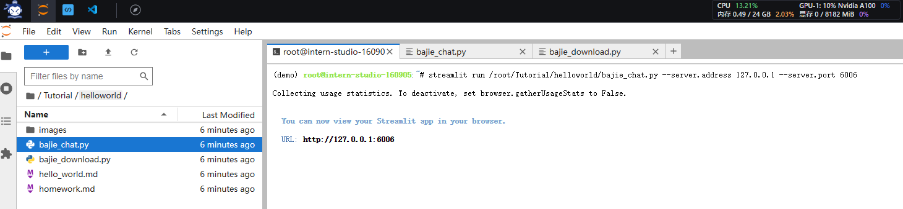

课时二 轻松分钟玩转书生·浦语大模型趣味 Demo
飞书地址
1. 提交的作业结果
作业要求
1.1 作业1
- 使用 InternLM2-Chat-1.8B 模型生成 300 字的小故事（截图）

1.2 作业2
- 熟悉 huggingface 下载功能，使用 huggingface_hub python 包，下载 InternLM2-Chat-7B 的 config.json 文件到本地（截图下载过程）
1.3 作业3
1.4 作业4
1.5 业笔记
1.5.1 模型生成小故事
1.5.2 huggingface下载模型
进入demo环境（conda），输入python进入python命令编写如下代码进行模型config下载
| from huggingface_hub import hf_hub_download
hf_hub_download(repo_id="internlm/internlm2-chat-1_8b", filename="config.json")
|
1.5.3 Lagent 智能体
1.5.4 灵笔2部署
2. 视频笔记
视频链接
实战任务
3. 文档复现笔记
文档链接
3.1 部署InternLM2-Chat-1.8B 模型进行智能对话
3.1.1 配置基础环境
进入算力平台点击创建开发机，选择算力——>开发机命名——>选择镜像（cuda11.7-conda）——>设置算力用时。

进入开发机终端，输入如下命令安装conda开发环境（实测运行12分钟左右）
studio-conda -o internlm-base -t demo
# 与 studio-conda 等效的配置方案
# conda create -n demo python==3.10 -y
# conda activate demo
# conda install pytorch==2.0.1 torchvision==0.15.2 torchaudio==2.0.2 pytorch-cuda=11.7 -c pytorch -c nvidia

-
conda create -n demo python==3.10 -y: 这个命令使用conda包管理器创建一个名为"demo"的环境，并指定使用Python 3.10版本。-y选项表示在创建环境时自动确认所有提示，无需手动确认。
-
conda activate demo: 这个命令用于激活名为"demo"的环境。激活环境后，所有后续的命令和操作都将在该环境中进行。
-
conda install pytorch==2.0.1 torchvision==0.15.2 torchaudio==2.0.2 pytorch-cuda=11.7 -c pytorch -c nvidia: 这个命令使用conda安装特定版本的PyTorch及其相关库。pytorch==2.0.1表示安装PyTorch 2.0.1版本，torchvision==0.15.2表示安装torchvision库的0.15.2版本，torchaudio==2.0.2表示安装torchaudio库的2.0.2版本。pytorch-cuda=11.7表示安装支持CUDA 11.7的PyTorch版本。-c pytorch -c nvidia指定了从pytorch和nvidia这两个渠道进行安装。


查看conda环境list

进入开发环境
进行环境依赖包安装
pip install huggingface-hub==0.17.3
pip install transformers==4.34
pip install psutil==5.9.8
pip install accelerate==0.24.1
pip install streamlit==1.32.2
pip install matplotlib==3.8.3
pip install modelscope==1.9.5
pip install sentencepiece==0.1.99
- huggingface-hub: 提供了与Hugging Face模型和数据集库的交互功能。
- transformers: 提供了用于自然语言处理任务的预训练模型和相关工具。
- psutil: 提供了一个跨平台的库，用于获取系统信息和进程管理。
- accelerate: 提供了用于加速深度学习训练的工具和API。
- streamlit: 提供了一个用于构建交互式Web应用程序的Python库。
- matplotlib: 提供了一个用于绘制图表和可视化数据的Python库。
- modelscope: 提供了一个用于分析和比较机器学习模型的Python库。
- sentencepiece: 提供了一个用于分词和生成子词单元的工具和库。
3.1.2 下载大模型
进入jupyter终端，进入demo环境（conda），cd到当前jupyter路径下。
cd /root
conda activate demo

创建文件夹&python文件
mkdir demo
cd demo
tourch cli_demo.py
tourch download_mini.py
编写脚本——download_mini.py
| import os # 导入os模块，用于操作系统相关的操作
from modelscope.hub.snapshot_download import snapshot_download # 从modelscope.hub模块导入snapshot_download函数，用于下载模型
# 创建保存模型目录
os.system("mkdir /root/models") # 使用os.system执行命令行命令，创建一个名为models的目录在/root路径下
# save_dir是模型保存到本地的目录
save_dir="/root/models" # 定义变量save_dir，其值为模型保存的目录路径
# 使用snapshot_download函数下载模型，参数包括模型的名字，缓存目录和版本号
snapshot_download("Shanghai_AI_Laboratory/internlm2-chat-1_8b",
cache_dir=save_dir,
revision='v1.1.0')
|
执行命令下载模型


#### 3.1.3 基于大模型对话
| import torch # 导入torch库，用于进行深度学习模型的操作
from transformers import AutoTokenizer, AutoModelForCausalLM # 从transformers库中导入AutoTokenizer和AutoModelForCausalLM，用于处理自然语言和加载模型
model_name_or_path = "/root/models/Shanghai_AI_Laboratory/internlm2-chat-1_8b" # 模型的名称或路径
tokenizer = AutoTokenizer.from_pretrained(model_name_or_path, trust_remote_code=True, device_map='cuda:0') # 加载预训练的tokenizer
model = AutoModelForCausalLM.from_pretrained(model_name_or_path, trust_remote_code=True, torch_dtype=torch.bfloat16, device_map='cuda:0') # 加载预训练的模型
model = model.eval() # 将模型设置为评估模式
system_prompt = """You are an AI assistant whose name is InternLM (书生·浦语).
- InternLM (书生·浦语) is a conversational language model that is developed by Shanghai AI Laboratory (上海人工智能实验室). It is designed to be helpful, honest, and harmless.
- InternLM (书生·浦语) can understand and communicate fluently in the language chosen by the user such as English and 中文.
""" # 系统提示信息
messages = [(system_prompt, '')] # 初始化消息列表
print("=============Welcome to InternLM chatbot, type 'exit' to exit.=============") # 打印欢迎信息
while True: # 循环接收用户输入
input_text = input("\nUser >>> ") # 获取用户输入
input_text = input_text.replace(' ', '') # 去除用户输入的空格
if input_text == "exit": # 如果用户输入'exit'，则退出循环
break
length = 0
for response, _ in model.stream_chat(tokenizer, input_text, messages): # 使用模型进行聊天
if response is not None: # 如果响应不为空
print(response[length:], flush=True, end="") # 打印响应
length = len(response) # 更新响应长度
|

输入提示词：创作一个300字的寓言故事，要求有趣
3.2 部署八戒-Chat-1.8B模型
3.2.1 进入环境&下载源码
| conda activate demo
cd /root/
git clone https://gitee.com/InternLM/Tutorial -b camp2
# git clone https://github.com/InternLM/Tutorial -b camp2
cd /root/Tutorial
|

3.2.2 运行Chat-八戒
| import os
#模型下载
from modelscope.hub.snapshot_download import snapshot_download
# 创建保存模型目录
os.system("mkdir -p /root/models")
# save_dir是模型保存到本地的目录
save_dir="/root/models"
snapshot_download('JimmyMa99/BaJie-Chat-mini',
cache_dir=save_dir)
|
- 运行模型下载代码
python /root/Tutorial/helloworld/bajie_download.py
streamlit run /root/Tutorial/helloworld/bajie_chat.py --server.address 127.0.0.1 --server.port 6006

点击SSH连接，找寻自己的端口号，并对应修改ssh映射命令的端口号
# 从本地使用 ssh 连接 studio 端口
# 将下方端口号 38374 替换成自己的端口号
ssh -CNg -L 6006:127.0.0.1:6006 root@ssh.intern-ai.org.cn -p 38374
ssh: 这是SSH客户端命令，用于建立安全的远程连接。
-CNg: 这是ssh命令的选项。-C选项启用压缩，-N选项指示ssh不要执行远程命令，-g选项允许远程主机通过隧道连接到本地主机。
-L 6006:127.0.0.1:6006: 这是ssh命令的端口转发选项。它指示ssh在本地主机的端口6006上监听，并将所有传入的连接转发到远程主机的127.0.0.1:6006。
root@ssh.intern-ai.org.cn: 这是远程主机的用户名和主机名。在这个例子中，用户名是root，主机名是ssh.intern-ai.org.cn。
-p 38374: 这是ssh命令的端口选项。它指示ssh使用38374端口连接到远程主机。

- 模型加载中
- 加载完成界面

- 对话

3.3 Lagent 智能体
3.3.1 前置知识
Lagent 是一个轻量级、开源的基于大语言模型的智能体（agent）框架，支持用户快速地将一个大语言模型转变为多种类型的智能体，并提供了一些典型工具为大语言模型赋能。它的整个框架图如下:

3.3.2 实现过程
3.3.2.1 开发机设置
创建开发机命名为LagentPro，镜像选择Cuda11.7，资源配置现存20G，内存72G

cd /root/demo
git clone https://gitee.com/internlm/lagent.git
# git clone https://github.com/internlm/lagent.git
cd /root/demo/lagent
git checkout 581d9fb8987a5d9b72bb9ebd37a95efd47d479ac
pip install -e . # 源码安装


3.3.2.2 使用Lagent运行InternLM2大模型的智能体
ln -s /root/share/new_models/Shanghai_AI_Laboratory/internlm2-chat-7b /root/models/internlm2-chat-7b
model_path = st.sidebar.text_input('模型路径：', value='/root/models/internlm2-chat-7b')

streamlit run /root/demo/lagent/examples/internlm2_agent_web_demo_hf.py --server.address 127.0.0.1 --server.port 6006
ssh -CNg -L 6006:127.0.0.1:6006 root@ssh.intern-ai.org.cn -p 41227

http://127.0.0.1:6006/
Q:你作为Agent智能体，能给我一个示例能体现你能力吗？
A:
3.3.3 源码解析
| import copy
import hashlib
import json
import os
import streamlit as st
from lagent.actions import ActionExecutor, ArxivSearch, IPythonInterpreter
from lagent.agents.internlm2_agent import INTERPRETER_CN, META_CN, PLUGIN_CN, Internlm2Agent, Internlm2Protocol
from lagent.llms import HFTransformer
from lagent.llms.meta_template import INTERNLM2_META as META
from lagent.schema import AgentStatusCode
# 从streamlit.logger导入get_logger函数，但未使用
class SessionState:
def init_state(self):
"""初始化会话状态变量."""
# 在st.session_state中创建'assistant'和'user'列表，用于存储对话历史记录
st.session_state['assistant'] = []
st.session_state['user'] = []
# 创建动作列表，包括ArxivSearch()
action_list = [
ArxivSearch(),
]
# 在st.session_state中创建'plugin_map'字典，将动作名称映射到动作对象
st.session_state['plugin_map'] = {
action.name: action
for action in action_list
}
# 在st.session_state中创建空的'model_map'字典，用于存储模型对象
st.session_state['model_map'] = {}
# 在st.session_state中创建'model_selected'变量，用于存储当前选择的模型名称
st.session_state['model_selected'] = None
# 在st.session_state中创建空的'plugin_actions'集合，用于存储当前选择的插件动作
st.session_state['plugin_actions'] = set()
# 在st.session_state中创建空的'history'列表，用于存储对话历史记录
st.session_state['history'] = []
def clear_state(self):
"""清除现有的会话状态."""
# 清空'assistant'和'user'列表，以及'model_selected'变量和'file'集合
st.session_state['assistant'] = []
st.session_state['user'] = []
st.session_state['model_selected'] = None
st.session_state['file'] = set()
# 如果'chatbot'存在于st.session_state中，则清空其会话历史记录
if 'chatbot' in st.session_state:
st.session_state['chatbot']._session_history = []
class StreamlitUI:
def __init__(self, session_state: SessionState):
# 初始化StreamlitUI对象，并设置其session_state属性为传入的SessionState对象
self.init_streamlit()
self.session_state = session_state
def init_streamlit(self):
"""初始化Streamlit的UI设置."""
# 设置页面配置，包括布局、页面标题和页面图标
st.set_page_config(
layout='wide',
page_title='lagent-web',
page_icon='./docs/imgs/lagent_icon.png')
# 在页面上显示标题和分隔线
st.header(':robot_face: :blue[Lagent] Web Demo ', divider='rainbow')
# 在侧边栏上显示标题
st.sidebar.title('模型控制')
# 在st.session_state中创建空的'file'集合，用于存储上传的文件
st.session_state['file'] = set()
# 在st.session_state中创建'model_path'变量，用于存储模型路径
st.session_state['model_path'] = None
def setup_sidebar(self):
"""设置侧边栏，用于模型和插件选择."""
# 从侧边栏获取模型名称输入，默认值为'internlm2-chat-7b'
model_name = st.sidebar.text_input('模型名称：', value='internlm2-chat-7b')
# 从侧边栏获取系统提示词输入，默认值为META_CN
meta_prompt = st.sidebar.text_area('系统提示词', value=META_CN)
# 从侧边栏获取数据分析提示词输入，默认值为INTERPRETER_CN
da_prompt = st.sidebar.text_area('数据分析提示词', value=INTERPRETER_CN)
# 从侧边栏获取插件提示词输入，默认值为PLUGIN_CN
plugin_prompt = st.sidebar.text_area('插件提示词', value=PLUGIN_CN)
# 从侧边栏获取模型路径输入，默认值为'/root/models/internlm2-chat-7b'
model_path = st.sidebar.text_input(
'模型路径：', value='/root/models/internlm2-chat-7b')
# 检查模型名称或模型路径是否已更改，如果是，则初始化新模型并清除会话状态
if model_name != st.session_state['model_selected'] or st.session_state['model_path'] != model_path:
st.session_state['model_path'] = model_path
model = self.init_model(model_name, model_path)
self.session_state.clear_state()
st.session_state['model_selected'] = model_name
if 'chatbot' in st.session_state:
del st.session_state['chatbot']
else:
# 如果模型未更改，则从st.session_state中的'model_map'字典获取现有模型对象
model = st.session_state['model_map'][model_name]
# 从侧边栏获取插件名称的多选输入，默认值为空列表
plugin_name = st.sidebar.multiselect(
'插件选择',
options=list(st.session_state['plugin_map'].keys()),
default=[],
)
# 从侧边栏获取数据分析的复选框输入，默认值为False
da_flag = st.sidebar.checkbox(
'数据分析',
value=False,
)
# 从插件名称列表中获取插件动作列表
plugin_action = [
st.session_state['plugin_map'][name] for name in plugin_name
]
# 如果'chatbot'存在于st.session_state中，则根据选择的插件和数据分析设置更新其属性
if 'chatbot' in st.session_state:
if len(plugin_action) > 0:
# 如果选择了插件，则创建ActionExecutor对象并设置chatbot的_action_executor属性为该对象
st.session_state['chatbot']._action_executor = ActionExecutor(actions=plugin_action)
else:
# 如果没有选择插件，则将chatbot的_action_executor属性设置为None
st.session_state['chatbot']._action_executor = None
if da_flag:
# 如果选择了数据分析，则创建ActionExecutor对象并设置chatbot的_interpreter_executor属性为该对象
st.session_state['chatbot']._interpreter_executor = ActionExecutor(actions=[IPythonInterpreter()])
else:
# 如果没有选择数据分析，则将chatbot的_interpreter_executor属性设置为None
st.session_state['chatbot']._interpreter_executor = None
# 更新chatbot的提示词属性为侧边栏输入的值
st.session_state['chatbot']._protocol._meta_template = meta_prompt
st.session_state['chatbot']._protocol.plugin_prompt = plugin_prompt
st.session_state['chatbot']._protocol.interpreter_prompt = da_prompt
if st.sidebar.button('清空对话', key='clear'):
# 如果点击了侧边栏上的“清空对话”按钮，则调用SessionState对象的clear_state方法来清除会话状态
self.session_state.clear_state()
# 从侧边栏获取文件上传器输入，用于上传文件到应用程序中使用
uploaded_file = st.sidebar.file_uploader('上传文件')
return model_name, model, plugin_action, uploaded_file, model_path
def init_model(self, model_name, path):
"""根据输入的模型名称初始化模型."""
# 使用HFTransformer类初始化模型对象，并将模型路径和其他参数传递给构造函数。将模型对象存储在st.session_state中的'model_map'字典中。
st.session_state['model_map'][model_name] = HFTransformer(path=path, meta_template=META, max_new_tokens=1024, top_p=0.8, top_k=None, temperature=0.1, repetition_penalty=1.0, stop_words=['<|im_end|>'])
return st.session_state['model_map'][model_name]
def initialize_chatbot(self, model, plugin_action):
"""使用给定的模型和插件动作初始化聊天机器人."""
# 使用Internlm2Agent类初始化聊天机器人对象，并将LLM（语言模型）、协议和最大回合数传递给构造函数。返回聊天机器人对象。
return Internlm2Agent(
llm=model,
protocol=Internlm2Protocol(
tool=dict(
begin='{start_token}{name}\n',
start_token='<|action_start|>',
name_map=dict(
plugin='<|plugin|>', interpreter='<|interpreter|>'),
belong='assistant',
end='<|action_end|>\n',
), ),
max_turn=7)
def render_user(self, prompt: str):
# 使用st.chat_message('user')在聊天窗口中创建一个新的用户消息，并使用st.markdown(prompt)显示提示文本。
with st.chat_message('user'):
st.markdown(prompt)
def render_assistant(self, agent_return):
# 使用st.chat_message('assistant')在聊天窗口中创建一个新的助手消息，并迭代agent_return中的actions。对于每个不是FinishAction的非空动作，调用render_action方法来显示它。最后，使用st.markdown(agent_return.response)显示agent_return的响应。
with st.chat_message('assistant'):
for action in agent_return.actions:
if (action) and (action.type != 'FinishAction'):
self.render_action(action)
st.markdown(agent_return.response)
def render_plugin_args(self, action):
# 从动作中获取动作名称和参数，并将它们转换为JSON格式的字符串。使用st.markdown显示该字符串。
action_name = action.type
args = action.args
import json
parameter_dict = dict(name=action_name, parameters=args)
parameter_str = '```json\n' + json.dumps(parameter_dict, indent=4, ensure_ascii=False) + '\n```'
st.markdown(parameter_str)
def render_interpreter_args(self, action):
# 使用st.info显示动作类型，并使用st.markdown显示动作参数中的文本。
st.info(action.type)
st.markdown(action.args['text'])
def render_action(self, action):
# 使用st.markdown显示动作的thought属性。如果动作类型是IPythonInterpreter，则调用render_interpreter_args方法来显示参数。否则，如果动作类型不是FinishAction，则调用render_plugin_args方法来显示参数。最后，调用render_action_results方法来显示动作的结果。
st.markdown(action.thought)
if action.type == 'IPythonInterpreter':
self.render_interpreter_args(action)
elif action.type == 'FinishAction':
pass
else:
self.render_plugin_args(action)
self.render_action_results(action)
def render_action_results(self, action):
"""显示动作的结果，包括文本、图像、视频和音频."""
# 如果动作结果是字典，则检查它是否包含文本、图像、视频或音频，并使用相应的st方法显示它们。如果结果是列表，则迭代每个项目，并根据其类型显示相应的内容。如果动作有错误消息，则使用st.error显示它。
if (isinstance(action.result, dict)):
if 'text' in action.result:
st.markdown('```\n' + action.result['text'] + '\n```')
if 'image' in action.result:
# image_path = action.result['image']
for image_path in action.result['image']:
image_data = open(image_path, 'rb').read()
st.image(image_data, caption='Generated Image')
if 'video' in action.result:
video_data = action.result['video']
video_data = open(video_data, 'rb').read()
st.video(video_data)
if 'audio' in action.result:
audio_data = action.result['audio']
audio_data = open(audio_data, 'rb').read()
st.audio(audio_data)
elif isinstance(action.result, list):
for item in action.result:
if item['type'] == 'text':
st.markdown('```\n' + item['content'] + '\n```')
elif item['type'] == 'image':
image_data = open(item['content'], 'rb').read()
st.image(image_data, caption='Generated Image')
elif item['type'] == 'video':
video_data = open(item['content'], 'rb').read()
st.video(video_data)
elif item['type'] == 'audio':
audio_data = open(item['content'], 'rb').read()
st.audio(audio_data)
if action.errmsg:
st.error(action.errmsg)
def main():
# 如果'ui'不在st.session_state中，则初始化SessionState对象和StreamlitUI对象，并将它们存储在st.session_state中。否则，设置页面配置并显示标题和分隔线。然后，调用StreamlitUI对象的setup_sidebar方法来设置侧边栏。接下来，检查'chatbot'是否存在于st.session_state中，或者模型是否已更改。如果是，则调用initialize_chatbot方法来初始化聊天机器人，并将会话历史记录设置为空列表。最后，迭代会话状态中的用户提示和代理返回，并调用相应的render方法来显示它们。由于代码片段不完整，无法提供完整的main函数注释。请注意，您可能需要提供缺少的代码和变量以使main函数正常工作。
if 'ui' not in st.session_state:
session_state = SessionState()
session_state.init_state()
st.session_state['ui'] = StreamlitUI(session_state)
else:
st.set_page_config(layout='wide', page_title='lagent-web', page_icon='./docs/imgs/lagent_icon.png')
st.header(':robot_face: :blue[Lagent] Web Demo ', divider='rainbow')
_, model, plugin_action, uploaded_file, _ = st.session_state['ui'].setup_sidebar()
if 'chatbot' not in st.session_state or model != st.session_state['chatbot']._llm:
st.session_state['chatbot'] = st.session_state['ui'].initialize_chatbot(model, plugin_action)
st.session_state['session_history'] = []
for prompt, agent_return in zip(st.session_state['user'], st.session_state['assistant']): # 假设这些变量存在于会话状态中并包含适当的值。您可能需要根据您的应用程序逻辑进行调整。
st.session_state['ui'].render_user(prompt) # 显示用户提示。您可能需要根据您的应用程序逻辑进行调整。
st.session_state['ui'].render_assistant(agent_return) # 显示代理返回。您可能需要根据您的应用程序逻辑进行调整
|
3.4 多模态Xomposer （灵笔·2）
3.4.1 前置知识
Xomposer地址
论文地址
论文pdf
浦语·灵笔2是基于书生·浦语2大语言模型研发的突破性的图文多模态大模型，具有非凡的图文写作和图像理解能力，在多种应用场景表现出色：
- 自由指令输入的图文写作： 浦语·灵笔2可以理解自由形式的图文指令输入，包括大纲、文章细节要求、参考图片等，为用户打造图文并貌的专属文章。生成的文章文采斐然，图文相得益彰，提供沉浸式的阅读体验。
- 准确的图文问题解答： 浦语·灵笔2具有海量图文知识，可以准确的回复各种图文问答难题，在识别、感知、细节描述、视觉推理等能力上表现惊人。
- 杰出性能： 浦语·灵笔2基于书生·浦语2-7B模型，我们在13项多模态评测中大幅领先同量级多模态模型，在其中6项评测中超过 GPT-4V 和 Gemini Pro。
3.4.2 实现过程
3.4.2.1创建开发机资源
开启 50% A100
3.4.2.2进入conda环境补充依赖包
conda activate demo
# 补充环境包
pip install timm==0.4.12 sentencepiece==0.1.99 markdown2==2.4.10 xlsxwriter==3.1.2 gradio==4.13.0 modelscope==1.9.5
3.4.2.3下载源码
cd /root/demo
git clone https://gitee.com/internlm/InternLM-XComposer.git
# git clone https://github.com/internlm/InternLM-XComposer.git
cd /root/demo/InternLM-XComposer
git checkout f31220eddca2cf6246ee2ddf8e375a40457ff626
3.4.2.4创建软链接（模型）
通过创建这些符号链接，可以在/root/models目录下访问到原始文件或目录的内容，而无需直接在/root/models目录下复制这些文件或目录的副本。这样可以节省磁盘空间，并且对于需要在多个位置访问相同文件或目录的情况非常有用。
ln -s /root/share/new_models/Shanghai_AI_Laboratory/internlm-xcomposer2-7b /root/models/internlm-xcomposer2-7b
ln -s /root/share/new_models/Shanghai_AI_Laboratory/internlm-xcomposer2-vl-7b /root/models/internlm-xcomposer2-vl-7b
3.4.2.5启动Xcomposer图文写作
cd /root/demo/InternLM-XComposer
python /root/demo/InternLM-XComposer/examples/gradio_demo_composition.py --code_path /root/models/internlm-xcomposer2-7b --private --num_gpus 1 --port 6006
3.4.2.6本地连接
# 从本地使用 ssh 连接 studio 端口
# 将下方端口号 38374 替换成自己的端口号
ssh -CNg -L 6006:127.0.0.1:6006 root@ssh.intern-ai.org.cn -p 38374
http://127.0.0.1:6006/

- 默认设置
- 提示词
>根据以下标题：“中国水墨画：流动的诗意与东方美学”，创作长文章，字数不少于800字。请结合以下文本素材：“水墨画是由水和墨调配成不同深浅的墨色所画出的画，是绘画的一种形式，更多时候，水墨画被视为中国传统绘画，也就是国画的代表。也称国画，中国画。墨水画是中国传统画之一。墨水是国画的起源，以笔墨运用的技法基础画成墨水画。线条中锋笔，侧锋笔，顺锋和逆锋，点染，擦，破墨，拨墨的技法。墨于水的变化分为五色。画成作品，题款，盖章。就是完整的墨水画作品。基本的水墨画，仅有水与墨，黑与白色，但进阶的水墨画，也有工笔花鸟画，色彩缤纷。后者有时也称为彩墨画。在中国画中，以中国画特有的材料之一，墨为主要原料加以清水的多少引为浓墨、淡墨、干墨、湿墨、焦墨等，画出不同浓淡（黑、白、灰）层次。别有一番韵味称为“墨韵”。而形成水墨为主的一种绘画形式。”
- 插图数量 6
- 随机种子
- 输出结果
根据以下标题：“中国水墨画：流动的诗意与东方美学”，创作长文章，字数不少于800字。请结合以下文本素材：“水墨画是由水和墨调配成不同深浅的墨色所画出的画，是绘画的一种形式，更多时候，水墨画被视为中国传统绘画，也就是国画的代表。也称国画，中国画。墨水画是中国传统画之一。墨水是国画的起源，以笔墨运用的技法基础画成墨水画。线条中锋笔，侧锋笔，顺锋和逆锋，点染，擦，破墨，拨墨的技法。墨于水的变化分为五色。画成作品，题款，盖章。就是完整的墨水画作品。基本的水墨画，仅有水与墨，黑与白色，但进阶的水墨画，也有工笔花鸟画，色彩缤纷。后者有时也称为彩墨画。在中国画中，以中国画特有的材料之一，墨为主要原料加以清水的多少引为浓墨、淡墨、干墨、湿墨、焦墨等，画出不同浓淡（黑、白、灰）层次。别有一番韵味称为“墨韵”。而形成水墨为主的一种绘画形式。”
1
1.005
4096
True
8909
中国水墨画：流动的诗意与东方美学中国的传统绘画，特别是水墨画，被誉为“墨韵之舞”，以笔墨挥洒、线条交织的形式，展现了中国特有的审美情趣和文化内涵。水墨画是一种独特的艺术形式，它不仅体现了中国传统文化的精髓，也彰显了东方的美学观念和哲学思想。在这篇文章中，我们将深入探讨水墨画的艺术特点，及其在中国文化中的重要地位。
起源与发展水墨画的历史可以追溯到中国古代的战国时期（公元前475年—公元前221年）。当时的绘画主要是用毛笔在绢或纸上绘制，而颜料则是从矿物、植物和动物中提取。随着时代的发展，绘画技法不断丰富，其中最重要的贡献之一就是墨的发现和使用。据传，秦始皇统一六国后，下令烧毁书籍，但一位书生藏起了一本珍贵的古书。这本古书后来被无意中丢弃，落入水中被泡湿。当书生捞起书页时，意外地发现上面的文字并未被水破坏，反而更加清晰了。这个故事告诉我们，水与墨的搭配是创造奇迹的关键。从此以后，中国人开始将水和墨结合起来创作出具有独特韵味的画作。
核心元素水墨画的核心元素包括笔法、墨色和构图。首先，笔法在水墨画中至关重要。不同的笔触和笔力能够产生丰富的视觉效果，如粗犷豪放的皴擦，细腻柔美的点染等。其次，墨色的运用也是水墨画的精髓所在。通过调节水的多少，可以产生浓淡干湿的变化，创造出深邃神秘的氛围。最后，构图则决定了画面的整体布局和意境表达。合理的构图能够引导观者的视线流动，增强画面的艺术感染力。
技法与表现力水墨画的技法非常多样化，常见的有泼墨、破墨、积墨、宿墨、枯墨等。这些技法各有特色，能够产生不同的效果。例如，泼墨适用于表现山峦起伏的大气磅礴；破墨则适合描绘树木枝叶的繁茂纷杂；积墨则多用于营造厚重深邃的山水气氛。此外，水墨画还常常结合诗词歌赋，形成一种诗情画意的境界。这种融合不仅提升了画作的意境，也让欣赏者能够更好地领略到其中的文化内涵。
价值与意义水墨画作为中国传统文化的瑰宝，不仅是中国艺术的代表，更是世界文化艺术宝库中的一颗璀璨明珠。它的价值不仅仅在于其独特的艺术风格和技术手段，更在于其所承载的深厚文化底蕴和精神内涵。通过欣赏水墨画，人们不仅可以感受到艺术家对自然的感悟和对生命的思考，也能够领悟到中国哲学的智慧和道德准则。因此，保护和传承水墨画这一宝贵的文化遗产显得尤为重要。
结语综上所述，水墨画作为一门古老的艺术形式，不仅具有独特的审美价值，更是中国传统文化的重要组成部分。它的魅力不仅体现在技艺的高超上，更在于其背后所蕴含的深刻思想和文化内涵。让我们共同努力，让这门古老而又鲜活的艺术形式得以传承并发扬光大。
3.4.2.7 启动Xcomposer图片理解
conda activate demo
cd /root/demo/InternLM-XComposer
python /root/demo/InternLM-XComposer/examples/gradio_demo_chat.py --code_path /root/models/internlm-xcomposer2-vl-7b --private --num_gpus 1 --port 6006
# 从本地使用 ssh 连接 studio 端口
# 将下方端口号 38374 替换成自己的端口号
ssh -CNg -L 6006:127.0.0.1:6006 root@ssh.intern-ai.org.cn -p 38374
3.4.2.8 上传图片分析图片内容